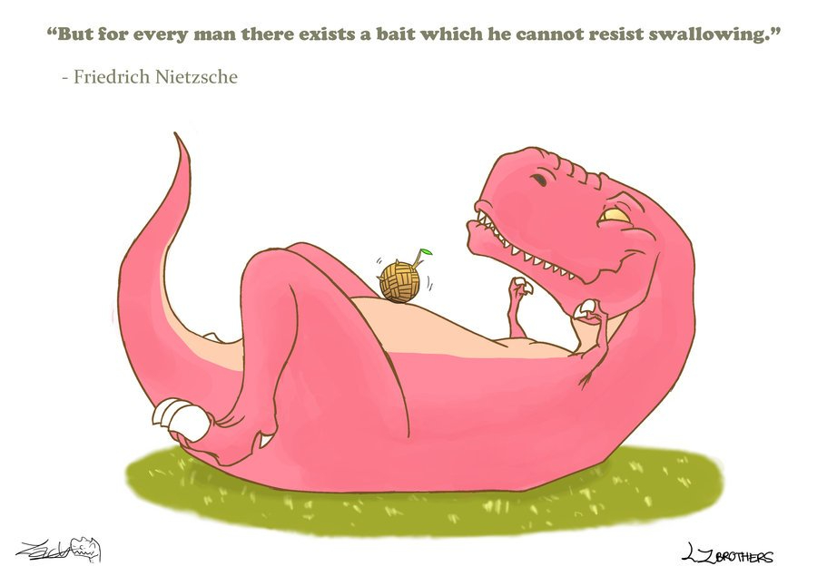

Mindset & Wellness
Temptations

I'm curious what made you want to read this post about temptations. What are you so tempted to do? What brought you here to this tempted place in your mind? Food? Drugs? Sex? Alcohol? Exercise? For lack of a better word, let's just call them all addictions.
In my opinion, addictions are very black and white. You're either attracted to something or you're not. Most anybody that I'm aware of can watch a trailer at the movie theater and decide halfway through the 90 second teaser whether or not they'd like to see that movie in the future. It takes a strong matter of knowing exactly who you are at the core of your being before you can make a decision that quickly. If you truly think you are the type of person that needs to do something that you know is negative for your well-being every day, then that's probably the way life is going to pan out for you until something changes in your mind. I think we're all addicted to a lot of things. Whether it's in a good way or a bad way is up to you.
If you're anything like me, you have a strong urge to eat fast food every time you drive past all of their big bright neon signs. Most times the sign says something like, "Come inside, join the party!" If you are in fact a food lover then you can place your own example here (maybe it's pizza, or maybe chocolate?), but mine is most definitely Taco Bell (a.k.a. - T-Bell). It makes me feel weak when I give in to it. It tastes so damn good when it's shifting around in my mouth, and nothing else matters (insert drooling emoji here). Sorry, getting a little carried away.
Anyways, I bet it would taste even better if it were cut back to only one or two days a month. That way, when I am eating my shredded chicken quesarito from T-Bell it will taste even better because it will be more of a treat rather than a meal I am used to having on a more regular basis. When it comes to food, just ask yourself one simple question: If I am trying to clean up my bad eating habits, and my favorite food (that I know is not good for my body) is sitting next to an apple on a table, which option would I reach for first if I "felt" hungry? Maybe you're just dreaming of the temporary buzz your tastebuds will get if you choose to eat your favorite food, or maybe you are actually hungry. I'd say go for the apple!
Now, let's talk about drugs. Drugs aren't much different than alcohol in my opinion. They are together in their own realm. They can be relaxing, they can be mind altering, they can put you in a hospital or even kill you! However, let's be realistic for a moment, anything you consume can kill you if the dose is right. Now I'm not saying you should go off and do drugs or binge drink every day because that's your own decision, but at least know your limits. If you don't already know your limits, you can usually get the suggested dose of whatever you are taking from your doctor.
Sometimes it's also safe to say that you know better than your doctor. As a fitness professional I like to think every human body is significantly different from the next, but also very similar... I hope that makes sense. Your doctor doesn't understand your thought processes or the feelings you have throughout your days. You should be a mad scientist when it comes to figuring out what different substances do to your physical well-being. I want you to know your body can function at high energy levels if you take the time to figure out what makes you feel like you are progressing forward in life. Tony Robbins, one of my favorite online mentors, has the famous quote, "There is no denying that inside of you the only thing that's going to make you happy in the year ahead and decades ahead is going to be having an experience on a regular basis where you feel like your life is making progress."
Sex. Sex is one of the most enjoyable things us dirty animals partake in. If it didn't happen for you, you would not exist, and if you are one of the few humans that does not enjoy sex I will still be your friend. However, I'm just assuming you're one of the many. I think this one comes down to a matter of what's best for your time spent doing it. Doing it because it's cool or the in-thing, or because you want to impress your friends by hooking up with a certain girl/guy, are not great reasons to have sex. Being realistic, a three minute session will surely be enough for you to reproduce if that's something that interests you, but having a two hour orgy every day of the week with people you don't even know and for your own selfish greed is probably a large waste of time. Throw some love into the mix and you can extend your three minutes as long as love will take you. You can form your own opinion on that, but that's my $0.02.
Even working too much can be a bad thing. I know a lot of people who go to the gym seven days out of every week, on top of the large work load they have at their job or at school, and they wonder why their back hurts and they're stressed out. My suggestion for them is: chill out! Go outside once in a while, do something different, go on a vacation, explore nature, enjoy the beauty that surrounds you. At the very least I think it's safe to take one day off each week. To put it simply, six days labor, one day rest. People are working themselves to death, literally! Work, work, work, work, work, it's not a great mindset to be in. It gives zero time to think for yourself. I don't know anybody that can hold their sanity without taking a moment to relax.
In essence, how much power you have over your mind will determine your success rate at avoiding these temptations or addictions. Whatever you want to call them, somebody just made up those terms to tell you what's wrong with you and not what's right with you. Everyone has issues, but at the end of each day you are the only one that can decide what's best for you, and nobody else. It's about asking yourself the right questions in your own mind, and taking action until something changes. If you're tempted to work your face off and reach that goal you've been thinking about for the past four months, hustle hard! But remember, all in moderation my friends ;) Then ask yourself: Is this substance/action serving me in a positive way? Am I surrounding myself with people that will uplift me in my times of need? What am I becoming by living the way I've been living? What could happen if I changed? Why not change now?